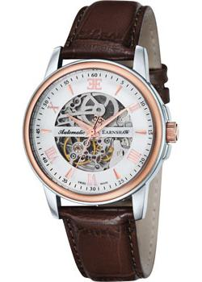

«Earnshaw Beagle»

«Описание товара»
Механические часы с автоподзаводом. Скелетон. Минеральное стекло.
Стрелки и маркеры часа с люминесцентным покрытием. Корпус выполнен из стали
с частичным IP покрытием.Кожаный ремень.
«Характеристики товара»
- Часы — Швейцарские часы
- Тип механизма — Механические часы с автоподзаводом
- Материал — Нержавеющая сталь + IP покрытие
- Пол — Мужские
«Подробное описание товара»
- Водозащита — WR 50
- Стекло — Минеральное стекло
- Дизайн — Англия
- Производство — Швейцария
- Гарантия — 2 года
- Диаметр 42 мм